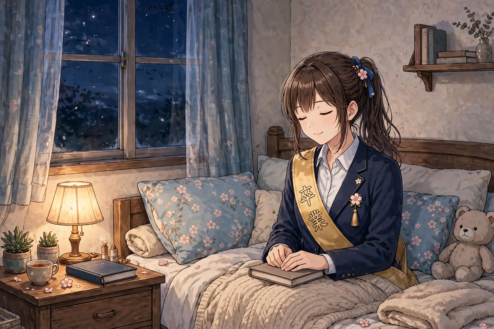

難波で正月休み明けに気になる寝つき｜夜更かしと生活リズムの乱れの整理とセルフケア、受診の目安正月休み明けの寝つき

1月の難波は、正月休みが明けて日常が戻る時期です。初詣の参道やミナミの通りは人でにぎわい、帰省の移動で電車や飛行機に長時間乗る日も続きます。そんな日々が明けた仕事始めの週に、布団に入っても目がさえて眠れないことはありませんか。寝つきとは、布団に入ってから眠りに入るまでの時間が長く感じる、目がさえて眠れない、寝つこうとすると考えごとが浮かぶ、といった感じ方を指す言葉として使われることが多いです。正月休み明けは、夜更かしと生活リズムの乱れ、初詣や帰省の移動の疲れが重なり、寝つきが気になりやすい時期になると言われています。このコラムでは、正月休み明けに寝つきが気になるときの要因の整理、夜の過ごし方とセルフケア、受診を考える目安についてお伝えします。
#難波 寝つき#正月休み明け#夜更かし 生活リズム#寝つき セルフケア
１．寝つきとは、どんな状態か
寝つきとは、布団に入ってから眠りに入るまでの時間が長く感じる、目がさえて眠れない、寝つこうとすると考えごとが浮かぶ、といった感じ方を指す言葉として使われることが多いです。寝つきの一般的なとらえ方は、寝つき・眠りの浅さの症状ページでも紹介しています。
寝つきの現れ方は、ひとつの原因だけで説明できるものではありません。夜更かしの続き方、初詣や帰省の移動の疲れ、食事の時間帯、寒さなどが関わっていると言われています。正月休み明けは、こうした要素が重なりやすい時期です。眠りに入りにくいと感じたら、その年末年始の過ごし方を振り返ってみることが、セルフケアの出発点になります。
２．考えられる要因
正月休み明けに寝つきが気になりやすくなる背景は、ひとつとは限らず、いくつかの要因が重なっている場合もあります。ここでは一般的に挙げられるものを整理しますが、特定の原因を断定するものではありません。
- 夜更かしの続き方：親戚の集まりやテレビ番組で夜更かしが続き、朝寝坊をする日が増えること。夜型の生活が続くと、寝つく時間が後ろへずれやすくなると言われています
- 初詣と帰省の移動の疲れ：初詣の参道でゆっくり歩く時間や、帰省の電車・飛行機での長時間の座りっぱなしが重なること。移動の疲れは、その日の夜の寝つきにも関わります。コラム「難波で寝つきが気になるときに｜夜の過ごし方と受診の目安」でも、移動の日の過ごし方を紹介しています
- 食事の時間帯のずれ：おせち料理や親戚の集まりでのごちそうが続き、夜遅くまで食べる日が増えること。寝る直前の食事は、寝つきにくさを感じやすくすると言われています
- 画面を見る時間の長さ：テレビ番組やスマートフォンを見る時間が長くなること。寝る直前まで画面を見ていると、目がさえて眠りにくくなると言われています
- 寒さと寝室の環境：暖房の効いた部屋と寒い寝室の行き来や、布団の冷たさが気になること。体が冷えたまま布団に入ると、寝つきにくさを感じやすくなる場合があります
- 仕事始めの週の気持ちの切り替え：仕事始めの週は、年始の挨拶回りや書類の整理が重なり、気持ちが張ったまま夜を迎える日が増えること。考えごとが浮かぶ夜は、寝つきにくさを感じやすくなると言われています
なかには、睡眠の状態や服用中の薬などが背景に関係している場合もあります。「正月休み明けだから当然だろう」と決めつけず、寝つきにくさが長く続く場合は医療機関で確認することが大切です（受診の目安は後述します）。
３．正月休み明けの過ごし方とセルフケア
正月休み明けのセルフケアは、生活リズムを一度に全部戻すことではなく、寝る時間と朝起きる時間を少しずつ整えることが中心になります。試しやすいものを挙げます。
- 起きる時間を少しずついつもの時間へ戻す：朝寝坊が続いた日も、起きる時間を一気に早めるのではなく、少しずつ戻します。朝の光を浴びる時間を入れると、体内のリズムが整いやすくなると言われています
- 寝る1時間前から画面を見る時間を短くする：テレビやスマートフォンを見る時間を区切り、寝る前は目を休ませる時間にします。画面から離れた時間に、温かい飲み物を飲みながらゆっくり過ごしましょう
- 夜遅い食事を避け、温かいものをとる：寝る直前の食事は避け、夕食は寝る2〜3時間前までに済ませます。温かいスープやお茶など、体を温めるものを取り入れると、寝つきやすくなります
- ぬるめのお湯にゆっくりつかる：帰宅後にシャワーで済ませず、ぬるめのお湯に浸かって肩まで温めましょう。湯船のなかで両腕をゆっくり回す、肩甲骨を寄せるように胸を開く、といった小さな動きを挟むと、さらに体が温まります
- 寝室を温め、布団を冷やさない工夫をする：寝る前に寝室を少し温め、布団の冷たさが気になるときは、湯たんぽや温かい毛布を使う工夫が役立ちます。足先が冷えるときは、厚手の靴下をはいて布団に入りましょう
- 初詣や帰省の移動のあとは、荷物の片づけを翌日に分ける：移動の日の夜は、荷物の片づけを一度に終わらせようとせず、翌日に分けて進めます。その日の夜は入浴と睡眠を優先し、翌朝の体の様子を見ながら続けましょう
- 寝つきの様子を簡単に記録する：「何時に布団に入り、どれくらいで眠れたか」「夜更かしした日はどうだったか」などを手帳に書き留めると、次の正月休みの過ごし方の備えに役立ちます
大切なのは、生活リズムを一度に全部戻そうとしないことです。起きる時間を少しずつ戻す、寝る前の画面時間を短くするといった小さな工夫ひとつから試し、自分の家の過ごし方に合うものを少しずつ残してみてください。全身の疲労感全般については、コラム「難波で気になる全身の疲労感｜要因の整理とセルフケア、受診の目安」もあわせてご覧ください。
セルフケアは、無理のない範囲で行うことが前提です。体調がすぐれない日や、痛み・腫れが気になるときは、セルフケアを控えて、まず医療機関への相談をご検討ください。
なお、寝つき全般については、記事「難波で寝つきが気になるときに｜夜の過ごし方と受診の目安」で整理しています。夜更かしや生活リズムの乱れとあわせて気になるときは、参考にしてください。
４．受診の目安
次のような場合は、セルフケアやサロンでのケアより先に、医療機関への相談をご検討ください。
- 寝つきにくさが数週間以上続き、日常生活に支障がある
- いびきが大きく、夜中に息が止まるような感じがある
- 夜中に何度も目が覚め、朝まで眠れた感じがしない日が続く
- 日中の強い眠気で、仕事や運転に支障が出ている
- 寝つきにくさと一緒に、気分の落ち込みや不安が強く続く
寝つきにくさの背景には、医療機関での確認が必要な状態が隠れていることもあります。気になる状態が続くときは、自己判断で様子を見続けず、かかりつけ医や医療機関へ相談してください。
５．ステラシリウス（難波）のご案内
ステラシリウスは、大阪市浪速区幸町1-2-9 RE-005 502号（JR難波駅 徒歩5分）にある女性専用サロンで、現在営業中です。料金はオイルマッサージ＋美容整体の90分コース10,000円（税込）のみ、営業時間は月〜土17:00〜22:00／日曜12:00〜22:00、完全予約制です。施術室はシャワー完備の完全個室で、施術の前後にシャワーをご利用いただけます。当店では鍼灸施術は行いません。
ご来店後は、カウンセリングで当日の体調と気になる部位をうかがい、ご希望の方はシャワーで汗を流して施術着にお着替えいただきます。美容整体で体のバランスを整えてから、オイルマッサージで全身をほぐします。施術後はシャワーでオイルを洗い流してゆっくりお支度いただき、最後にアフターカウンセリングで体の状態とセルフケアのポイントをお伝えします。ご予約はLINE公式アカウントから承っています。正月休み明けの寝つきが気になるときは、無理のない日程でご相談ください。